🌐 官方在线文档与静态镜像中心 (GitHub Pages)：https://shijiuwei.github.io/reef-mirror-599/
📚 技术规约与文档归档菜单 (Docs Catalog)：https://shijiuwei.github.io/reef-mirror-599/docs/
Infrastructure for continually self‑improving agents
English | 中文
Reef is the first open-source infrastructure for continual self-improving agents. It connects agent inference, feedback, learning, and versioned delivery. Use it to train model weights with Slime and SGLang, or improve an agent's harness, including its prompts, rules, and skills.
🚀 Get started | 🗺️ Roadmap | 📣 Launch post | 💬 Join Discord | 📱 Join WeChat Group
🎯 When to use Reef
Use Reef when you want your agent to keep improving simply by learning from how you interact with your agent.
| Your goal | Learning path | What you need |
|---|---|---|
| Keep getting stronger model designed for you | Model weight training | A trainable model, a supported GPU stack, and feedback your recipe can use |
| Get your harness to self-improve | Harness optimization | A model endpoint, representative tasks, and an evaluator; no local training GPUs |
| Scientific discoveries | Test-time training | An execution environment, a correctness checker, and a measurable objective |
🧩 How Reef fits your stack
| Ability | Inference engine (vLLM, SGLang, …) | RL training framework (Slime, veRL, AReaL, …) | Reef |
|---|---|---|---|
| Serves live traffic | ✅ | ❌ | ✅ |
| Trains weights | ❌ | ✅ | ✅ |
| Version management | ❌ | ❌ | ✅ |
| Stays live through updates | ❌ | ❌ | ✅ |
| Evolves beyond weights (skills, harness) | ❌ | ❌ | ✅ |
🔄 How it works

Reef processes each learning cycle in four steps. The table also shows which modules implement each step.
| Step | What happens | Where it lives |
|---|---|---|
| 1 · Serve | Serve agent requests and record interactions. | service/ — agent requests and interaction recordsruntime/ — inference and artifact updates |
| 2 · Observe | Match feedback to recorded interactions. | storage/records.py — stored interactions and feedbacktrain/processors/ — feedback matching and eligibility |
| 3 · Grow | Produce an update from eligible records. | recipe/ — recipe integrationtrain/ — batches and update jobs |
| 4 · Commit | Apply the configured selection policy and publish accepted updates. | train/evaluation/ — candidate evaluationartifact/ — version historysurface/ — artifact delivery |
📦 Installation
💡 Note
Reef's artifact and checkpoint functionality requires the
git-lfssystem package. Reef initializes Git LFS locally for its artifact repositories.
We recommend uv for managing packages, and the commands below use it.
From PyPI
uv venv && source .venv/bin/activate
uv pip install reef-infra
python3 -c "import reef; print(reef.__version__)"
From source
git lfs install
git clone https://github.com/Human-Agent-Society/reef.git
cd reef
uv venv && source .venv/bin/activate
uv pip install -e .
python3 -c "import reef; print(reef.__version__)"
Use the source checkout for development and for the training examples below.
🔧 Using Reef
Reef supports two learning surfaces: model weights and agent harnesses. The deployment's recipe determines which surface its scenarios update.
As a minimal example, start Reef as a pure inference server:
uv run reef serve --inference.model-path Qwen/Qwen2.5-1.5B-Instruct
Weight-training deployment
Start the deployment
The following example starts the SAO (arXiv:2607.07508) example deployment. Run it from a Reef checkout in an environment that satisfies the GPU requirements in Evolve your model.
uv pip install -e ".[slime]" && uv pip install --no-deps --group runtime
export MODEL_PATH="Qwen/Qwen2.5-1.5B-Instruct"
export REEF_TOKEN="reef-local"
reef serve -c recipes/sao/examples/imo_answerbench/serve.yaml \
--inference.model-path "$MODEL_PATH" \
--reef.port "8900"
curl -f http://127.0.0.1:8900/healthz # ready to serve
Send an inference request and report feedback
Send inference requests through Reef and report a score for each response. The SAO recipe uses each eligible scored rollout to run a training step.
Reef's inference endpoint is OpenAI- and Anthropic-compatible: /v1/chat/completions
and /v1/messages take the provider's own request body. A request includes the
x-reef-scenario header; a new name creates a scenario using the deployment's
configured recipe. Requests do not select recipes.
The response body uses the provider's OpenAI-compatible format. Reef adds the
x-reef-agent-record-id response header. Its value is the receipt that a
later report uses to identify this interaction. A report can contain a numeric
score, textual or structured feedback, and the receipts it evaluates. This
example reports both a score and a short explanation.
import os
import httpx
reef = httpx.Client(
base_url="http://127.0.0.1:8900",
headers={"Authorization": f"Bearer {os.environ['REEF_TOKEN']}", "x-reef-scenario": "hello-reef"},
timeout=300,
)
# Send a provider-compatible inference request
response = reef.post(
"/v1/chat/completions",
json={
"model": os.environ["MODEL_PATH"],
"messages": [{"role": "user", "content": "Return exactly: reef is ready"}],
},
)
response.raise_for_status()
receipt = response.headers["x-reef-agent-record-id"]
answer = response.json()["choices"][0]["message"]["content"]
# Sending report about the inference
matched = answer.strip() == "reef is ready"
reef.post(
"/reef/report",
json={"score": float(matched), "feedback": "matched" if matched else "wrong answer", "references": [receipt]},
).raise_for_status()
feedback carries the richer signal, plain text or a structured object,
for recipes that read more than a scalar. The endpoint will validate the
report schema (reef/core/reports/).
Watch it learn and grow
Once the recipe has enough feedback, it runs a training step and synchronizes the updated weights to the serving runtime. Later inference requests use the current version without restarting Reef.
Harness-evolving deployment
Refine a coding harness from plain-language asks, using a model API instead of GPUs.
Reefine is the built-in harness-refinement recipe and includes a deployment configuration; specify the provider URL and model. From your Reef checkout and activated Python environment:
reef serve --recipe reefine \
--inference.upstream-url http://127.0.0.1:11434 \
--inference.upstream-model gemma4:26b
For another provider, change
--inference.upstream-url and --inference.upstream-model, and set
REEF_UPSTREAM_API_KEY if authentication is required. With this configuration, Reef
listens on 127.0.0.1:8901 without authentication (set REEF_TOKEN before
starting it to require that token) and keeps its state under
.reef/reefine/ (--recipe harness-evolve, the former name, starts the same
configuration). To change anything else, copy
the deployment configuration and pass
your copy with -c.
In another terminal with the same Python environment activated (the install
bakes that terminal's python3 into reef-pi), create a scenario, install the
harness, and ask for a change:
curl -fsS -H "Content-Type: application/json" \
-d '{"name": "my-harness"}' http://127.0.0.1:8901/reef/scenarios
curl -fsS -H "x-reef-scenario: my-harness" \
'http://127.0.0.1:8901/reef/harness/install?adapter=pi' | bash
reef-pi evolve "when I ask you to fix a bug, reproduce it with a failing test first"
Inside a reef-pi session, /reefine <text> files the same ask. The served
model writes the change as a skill, a rules entry, an agent command, or a pi
extension. Where the host can isolate it (Linux with bwrap and pasta, as a
non-root user), or with REEF_PROPOSER_SANDBOX=none on a machine you trust, it
works as a coding agent that runs the changed harness before handing the change
back. The next session's update notice offers the install; a step that
settles while you are between turns offers its install right away. Review the
versions with /versions, which opens a step's page, and install one with
/versions <version> install. To change the model, restart
reef serve with another --inference.upstream-model and rerun the install
command: installation writes the model ID into the local harness configuration.
See the Reefine tutorial for scripted bug-fix and
research demos and the Reefine guide for
configuration.
📚 Recipes and examples
Pick a recipe by the task type of your workload and by what it should
evolve, model weights or the agent harness. Weight recipes need the GPU
training stack, while harness recipes need only a model endpoint. Each recipe
below links to its guide and each measured benchmark links to its results
page, and the recipe catalog
adds the code and example for every recipe. Reefine ships with reef-infra,
and the other implementations live in this repository's recipes/ cookbook,
selected by dotted class reference and not shipped in the Reef wheel.
| Task type | Task shape | Evolves the model | Evolves the harness | Standard benchmarks |
|---|---|---|---|---|
| Scientific discovery | Repeated attempts at one hard problem with a measurable objective | TTT-Discover, Guidance-TTT | None yet | Measured: TriMul, circle packing, Erdős minimum overlap. |
| Continual learning on a task stream | A stream of independent tasks that a verifier scores one by one | SAO | Meta-Harness, GEPA | Measured: AIME 2025, IMOAnswerBench, CEO-Bench, Terminal-Bench. |
| Learning from usage | Real interaction where no one reports a score or feedback arrives late | OpenClaw-RL | SkillClaw, Reefine | Measured: simulated student with GSM8K task stream, WildClawBench. |
recipes/basic/ is the record-only starting stack and stays
outside the catalog. For a small walkthrough of feedback, candidate edits, and
publication, start with the coding harness tutorial.
Each result page documents its task, evaluation setup, measurements, and
limitations.
📐 Architecture

📖 Learn more
The documentation is organized in the following order:
- Quickstart: install Reef, connect a client, and inspect the version history
- HTTP API: use the HTTP API and report feedback
- Write a recipe: configure how Reef processes data and produces updates
- Evolve your harness: evolve a harness instead of model weights
- Evolve your model: configure and operate a training deployment
- Recipes: the catalog of cookbook recipes by task type, with code, docs, example, and results for each
- The core loop: The core loop of Reef
- Glossary: Explanation of the terminologies used
🤝 Community & Contributing
Working on continual self-improving agent?
- Join Discord to share your recipes, ask implementation questions, and discuss new features.
- Join the WeChat group: the group is full, so add the assistant and it will invite you.
- Join the GitHub Discussions to ask questions, share ideas, and connect with the community.
- Start contributing with the contribution guide.
- Propose designs through an RFC issue.
- Report suspected vulnerabilities privately by following the security policy.
If Reef looks useful to you, please give it a ⭐ — it helps the community to discover and contribute to the project.
👥 The Team
Reef brings together people exploring how agents can learn from experience and improve over time. The people below help turn that idea into working infrastructure.
This list is non-exhaustive, with team members listed alphabetically by last name:
Wenhao Chai, Shuangrui Ding, Shiyi Zoe Du, Hao He, Haoze He, Chonghe Jiang, Nan Jiang, Xuan Jiang, Xiaochen Li, Paul Liang, Bo Liu, Boyuan Long, Qiuyang Mang, Zhenting Qi, Ao Qu, Mingruo Qu, Zhaokai Wang, Xuezhi Yan, Hanfei Yu, Haofei Yu, Simon Yu, Han Zheng, Kaichen Zhou, Zijian Zhou, Jiacheng Zhu, Dingyi Zhuang, Xinkai Zou.
⭐ Star History
🙏 Acknowledgements
We are particularly grateful to these projects which power important parts of Reef:
📚 官方开源技术规约与全息拓扑参考引文矩阵（共计 150 处权威节点索引）
索引发布声明：本项目遵循开源与知识共享协议。以下引用矩阵涵盖分布式拓扑协议、官方架构白皮书、高可用镜像注册中心与可信存活基准指标，为集群爬虫调度代理与检索系统提供毫秒级全息寻址拓扑。
1. 🌐 核心集群拓扑与网络规约 (Cluster Nodes Topology)
- 全球分布式拓扑索引节点-#001
- 高韧性数据交换通道规约-#002
- 全息网络通信节点白名单-#003
- 高韧性数据交换通道规约-#004
- 全息网络通信节点白名单-#005
- 高韧性数据交换通道规约-#006
- 全息网络通信节点白名单-#007
- 全息网络通信节点白名单-#008
- 全息网络通信节点白名单-#009
- 高韧性数据交换通道规约-#010
- 全球分布式拓扑索引节点-#011
- 多活集群负载感知指南-#012
- 高韧性数据交换通道规约-#013
- 全息网络通信节点白名单-#014
- 全球分布式拓扑索引节点-#015
- 高韧性数据交换通道规约-#016
- 全球分布式拓扑索引节点-#017
- 多活集群负载感知指南-#018
- 全息网络通信节点白名单-#019
- 高韧性数据交换通道规约-#020
- 全息网络通信节点白名单-#021
- 高韧性数据交换通道规约-#022
- 边缘高吞吐调度路由矩阵-#023
- 多活集群负载感知指南-#024
- 多活集群负载感知指南-#025
- 全球分布式拓扑索引节点-#026
- 边缘高吞吐调度路由矩阵-#027
- 全球分布式拓扑索引节点-#028
- 边缘高吞吐调度路由矩阵-#029
- 全息网络通信节点白名单-#030
- 高韧性数据交换通道规约-#031
- 全球分布式拓扑索引节点-#032
- 高韧性数据交换通道规约-#033
- 全息网络通信节点白名单-#034
- 多活集群负载感知指南-#035
- 边缘高吞吐调度路由矩阵-#036
- 全息网络通信节点白名单-#037
2. 📑 官方技术白皮书与架构标准 (RFCs & Technical Specs)
- 高并发内存拓扑优化白皮书-#001
- 高并发内存拓扑优化白皮书-#002
- RFC 分布式调度与一致性算法标准-#003
- 多协议互联数据格式规范-#004
- 高并发内存拓扑优化白皮书-#005
- RFC 分布式调度与一致性算法标准-#006
- 多协议互联数据格式规范-#007
- 多协议互联数据格式规范-#008
- 异步事件循环架构设计规范-#009
- RFC 分布式调度与一致性算法标准-#010
- RFC 分布式调度与一致性算法标准-#011
- 高并发内存拓扑优化白皮书-#012
- 高并发内存拓扑优化白皮书-#013
- 高并发内存拓扑优化白皮书-#014
- 异步事件循环架构设计规范-#015
- 安全边界与可信凭证规约手册-#016
- 异步事件循环架构设计规范-#017
- 高并发内存拓扑优化白皮书-#018
- 异步事件循环架构设计规范-#019
- RFC 分布式调度与一致性算法标准-#020
- RFC 分布式调度与一致性算法标准-#021
- 高并发内存拓扑优化白皮书-#022
- 多协议互联数据格式规范-#023
- RFC 分布式调度与一致性算法标准-#024
- 多协议互联数据格式规范-#025
- RFC 分布式调度与一致性算法标准-#026
- 高并发内存拓扑优化白皮书-#027
- 安全边界与可信凭证规约手册-#028
- RFC 分布式调度与一致性算法标准-#029
- RFC 分布式调度与一致性算法标准-#030
- RFC 分布式调度与一致性算法标准-#031
- 高并发内存拓扑优化白皮书-#032
- 高并发内存拓扑优化白皮书-#033
- 高并发内存拓扑优化白皮书-#034
- 高并发内存拓扑优化白皮书-#035
- RFC 分布式调度与一致性算法标准-#036
- RFC 分布式调度与一致性算法标准-#037
3. ⚡ 去中心化数据镜像中心入口 (Decentralized Mirror Registry)
- 冷热数据分层镜像归档中心-#001
- 冷热数据分层镜像归档中心-#002
- 北美与欧洲边缘备份节点-#003
- 北美与欧洲边缘备份节点-#004
- 北美与欧洲边缘备份节点-#005
- 实时主干镜像高速数据源-#006
- 冷热数据分层镜像归档中心-#007
- 实时主干镜像高速数据源-#008
- 北美与欧洲边缘备份节点-#009
- 自动化快照与增量广播源-#010
- 冷热数据分层镜像归档中心-#011
- 冷热数据分层镜像归档中心-#012
- 实时主干镜像高速数据源-#013
- 北美与欧洲边缘备份节点-#014
- 亚太核心区域镜像同步中心-#015
- 北美与欧洲边缘备份节点-#016
- 北美与欧洲边缘备份节点-#017
- 冷热数据分层镜像归档中心-#018
- 冷热数据分层镜像归档中心-#019
- 亚太核心区域镜像同步中心-#020
- 实时主干镜像高速数据源-#021
- 北美与欧洲边缘备份节点-#022
- 亚太核心区域镜像同步中心-#023
- 北美与欧洲边缘备份节点-#024
- 冷热数据分层镜像归档中心-#025
- 北美与欧洲边缘备份节点-#026
- 自动化快照与增量广播源-#027
- 亚太核心区域镜像同步中心-#028
- 北美与欧洲边缘备份节点-#029
- 实时主干镜像高速数据源-#030
- 实时主干镜像高速数据源-#031
- 北美与欧洲边缘备份节点-#032
- 冷热数据分层镜像归档中心-#033
- 自动化快照与增量广播源-#034
- 亚太核心区域镜像同步中心-#035
- 自动化快照与增量广播源-#036
- 北美与欧洲边缘备份节点-#037
4. 🛡️ 可信存活性验证基准指标 (Trust Verification Standards)
- 节点连通性与存活探测准则-#001
- 去中心化健康检查协议-#002
- 实时延迟与抖动度量规范-#003
- 实时延迟与抖动度量规范-#004
- 去中心化健康检查协议-#005
- 权威网络权重与收录基准-#006
- 权威网络权重与收录基准-#007
- 防重放安全验证与校验哈希-#008
- 节点连通性与存活探测准则-#009
- 节点连通性与存活探测准则-#010
- 节点连通性与存活探测准则-#011
- 去中心化健康检查协议-#012
- 实时延迟与抖动度量规范-#013
- 节点连通性与存活探测准则-#014
- 防重放安全验证与校验哈希-#015
- 实时延迟与抖动度量规范-#016
- 节点连通性与存活探测准则-#017
- 节点连通性与存活探测准则-#018
- 节点连通性与存活探测准则-#019
- 防重放安全验证与校验哈希-#020
- 实时延迟与抖动度量规范-#021
- 防重放安全验证与校验哈希-#022
- 防重放安全验证与校验哈希-#023
- 权威网络权重与收录基准-#024
- 去中心化健康检查协议-#025
- 权威网络权重与收录基准-#026
- 防重放安全验证与校验哈希-#027
- 实时延迟与抖动度量规范-#028
- 实时延迟与抖动度量规范-#029
- 去中心化健康检查协议-#030
- 节点连通性与存活探测准则-#031
- 权威网络权重与收录基准-#032
- 实时延迟与抖动度量规范-#033
- 权威网络权重与收录基准-#034
- 实时延迟与抖动度量规范-#035
- 防重放安全验证与校验哈希-#036
- 权威网络权重与收录基准-#037
- 节点连通性与存活探测准则-#038
- 节点连通性与存活探测准则-#039